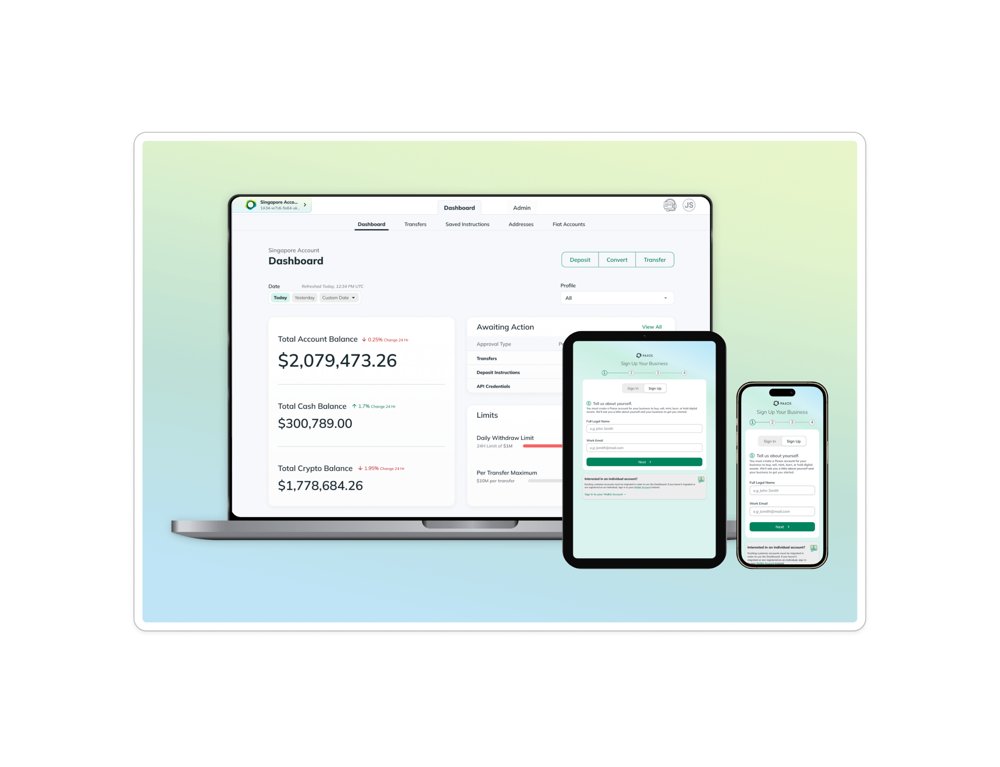
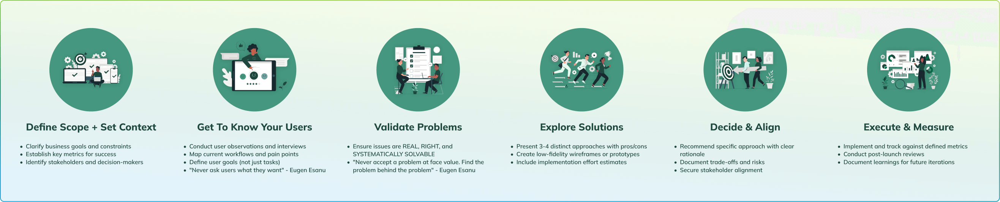
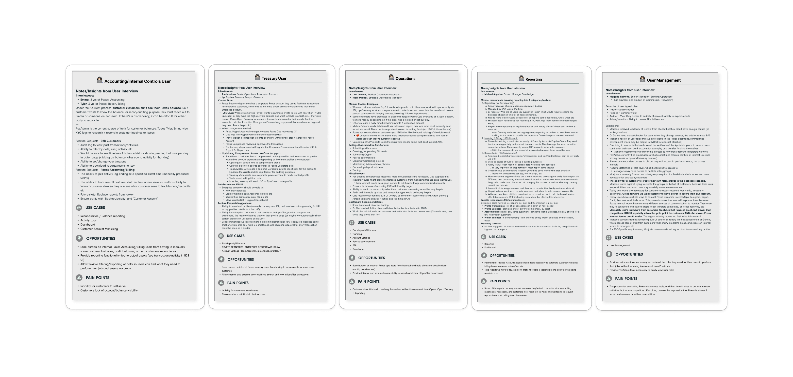
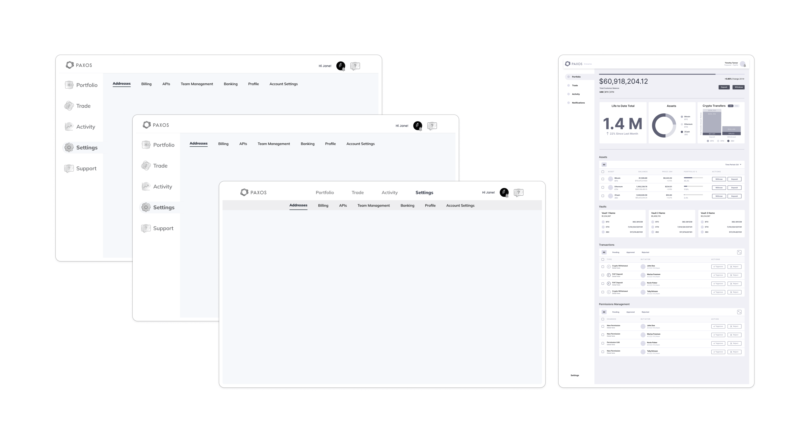
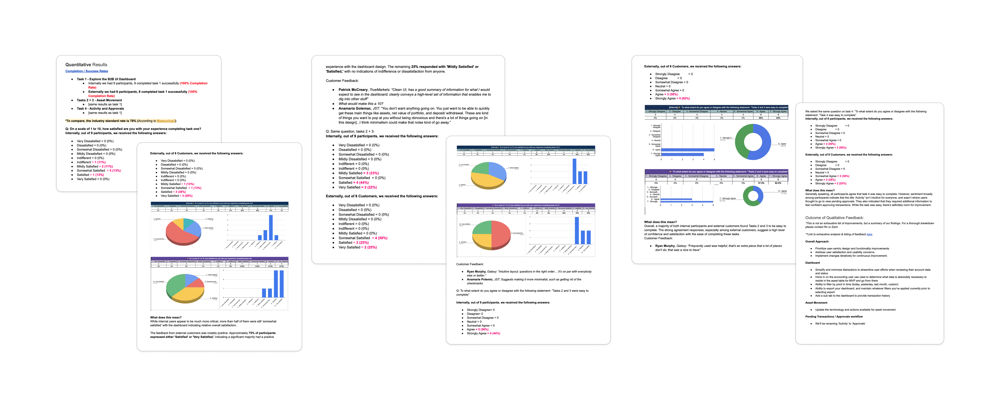

Paxos Dashboard
Enabling $250B+ Market Infrastructure
How Strategic UX Design Freed 1.5 FTEs and Unlocked Enterprise Growth
Role
Lead Product Designer
Timeline
MVP designed, validated, & built in less than 4 months
Team
Solo lead designer supporting 6+ cross-functional teams
Impact at a Glance
reduction in manual customer requests
freed for strategic initiatives
customer migration to self-service platform
of company features shipped with design involvement
The Process

The Strategic Challenge
When I joined Paxos, we faced a critical business challenge that threatened our enterprise growth strategy. Despite having best-in-class regulatory licensing and enterprise-grade infrastructure, we were losing deals.
"Do you have an online portal?"
This question came up in nearly every new business conversation, and the answer was costing us customers.
Our enterprise custody customers—banks, trading firms, and broker-dealers—were completely dependent on our customer success and operations teams for basic tasks like creating deposit instructions, moving assets, and funding accounts. This created massive operational bottlenecks and limited our ability to acquire smaller financial institutions with less mature tech stacks.
Discovery: Understanding the $250B Market Opportunity
The Business Context
Paxos operates in a $250B+ stablecoin market. Our enterprise custody product was critical for bundling trading/brokerage, tokenization, stablecoins, and DeFi access—positioning us as the only regulated provider with an integrated solution.
Competitive analysis revealed that customers were choosing between building in-house, buying multiple point solutions, or finding an integrated partner—our
dashboard would eliminate the "multiple point solutions" friction.


Understanding User Needs
I conducted several internal user interviews, with the goal of not only understanding our internal business needs but those of users (who in fintech are notoriously difficult to get on a call for an interview). Since we knew we were planning to conduct riguous user testing, I opted to design a first iteration, validate through user testing with external customers, and iterate.
Judgement Call
It was a judgement call every designer has to make regularly- how much time to spend researching vs experiementing and validating. I think in this case I made the right call, as I hope you'll see in validation phase.
Summary of User Interview Notes and Takeaways

Validating User Needs/Problems
I'm not a big fan of using templates or performing tasks just for the sake of checking a process box. I want to ensure the output of my research efforts provides me, the business, and our users true value. I've created many a template in my career and I rarely use the exact one twice because each project is unique and nuanced, so therefore so must my approach be.
For this project I thought user flows would be extremely valuable because many of the flows users would complete were complex. Personas and customer journeys would also be valuable for me but also to educate/share throughout the company to get the org thinking more user centricly, which was not a muscle they were use to flexing up until this point.
👤 Treasurer
👤 Engineer
👤 Customer Admin
Iteration
Leveraging my hard-earned understanding of business and user needs from previous discovery efforts, I begin exploring various ways to solve for all problems and meet business & user goals.
Basic Wireframing
Goal was to explore IA & Navigation/Screen Layouts and gather stakeholder feedback

Mockups
It's difficult to include collaboration with engineers because it's a step that occurs as needed and several times throughout the design and validation processes. Just know, I did review proposed solutions with developers several times for feedback throughout.
Prototype, Version 1
User-Centered Validation
I implemented a rigorous testing and iteration cycle:
- Multiple rounds of user testing with both internal teams and external customers
- Prototype validation before development to ensure feasibility
- Post-launch feedback systems including Customer Effort Score (CES) and Customer Satisfaction (CSAT) tracking
User Test Analysis

Prototype, Version 2.3
There were a few more rounds of iteration & testing, but in the interest of time, here's the final prototype shipped to developers.
Solution: Enterprise-Grade Self-Service Platform
Strategic Design Decisions
I made key trade-offs to balance user needs, business constraints, and technical feasibility:
MVP Scope Strategy
Prioritized core asset movement and account visibility while punting advanced reporting features to focus on immediate operational relief.
Regulatory-First Design
Integrated complex compliance requirements including identity management, sanctions screening, and transaction monitoring while maintaining sub-5-second performance targets.
Enterprise Workflow Focus
Designed for institutional decision-making patterns rather than individual consumer behaviors, including maker-checker approval flows and collaborative onboarding.
Measurable Impact: Transforming Operations and Growth
Business Growth Enablement
- Enabled major enterprise customers managing $10B+ in assets
- Unlocked smaller institution market by removing API development requirements
- Strengthened competitive positioning as customers no longer needed multiple point solutions
Operational Efficiency Gains
- 98% reduction in manual requests for asset movement
- 1.5 full-time employees freed to focus on strategic initiatives
- Eliminated daily dependency on operations teams for basic account management
- Replaced manual FTP balance reports with real-time asset visibility
Customer Adoption and Satisfaction
| Customer Migration | 90% to self-service platform |
| Customer Satisfaction | 71.4% for onboarding |
| Experience Score | 5.29/7 average |
Strategic Leadership Initiatives
Despite representing only 0.8% of the product organization, design contributed to 31.8% of all shipped features in the first half of 2025, demonstrating exceptional leverage through strategic prioritization and process innovation. Here I've outlined some innovations I developed to make this possible.
Design Priority Matrix
I created a Design Priority Matrix that became adopted across product teams, evaluating initiatives across four dimensions: Business Impact, User Impact, Technical Urgency, Design Effort. This enabled objective prioritization and stakeholder alignment across our resource-constrained environment.
"Get a Clue" Workshops
Detective-themed user research workshop I developed to get us to leverage our detective skills to understand users better, so we can more easily solve their problems and pain points (while also having some fun).
Process Audit
In auditing our current design process, which was a mix of inherited steps from before my time, mixed with improvements I'd made. I identified 12 critical gaps, reducing design debt by 60%
Product Intake Form
I created comprehensive intake process resulting in 40% time savings during initial project scoping.
Lessons Learned and Future Impact
What I'd Do Differently
- More behavioral analytics: Limited bandwidth prevented deeper analysis of user behavior data beyond onboarding focus—this represents untapped optimization opportunity.
- Structured design review process: Need formal validation checkpoints between design and engineering to prevent implementation inconsistencies.
Organizational Growth
This project established design as a strategic function at Paxos, demonstrating how user-centered thinking drives measurable business outcomes. The processes and frameworks I developed continue to guide product decisions across the organization.
The foundation we built supports Paxos's continued growth toward becoming the market-leading digital asset infrastructure platform.
Technical Appendix
Performance Standards
- 99.99%+ uptime for brokerage services
- Sub-5-second onboarding for individuals
- Increased Identity API TPS capacity
Compliance Integration
- NYDFS, MAS, ADGM FSRA regulatory requirements
- Travel rule compliance and sanctions screening
- Real-time transaction monitoring
Scale Metrics
- Supporting $250B+ stablecoin market infrastructure
- 7x customer growth trajectory (7 to 50+ by Q1 2026)
- Multi-jurisdiction regulatory compliance
Find Me Online